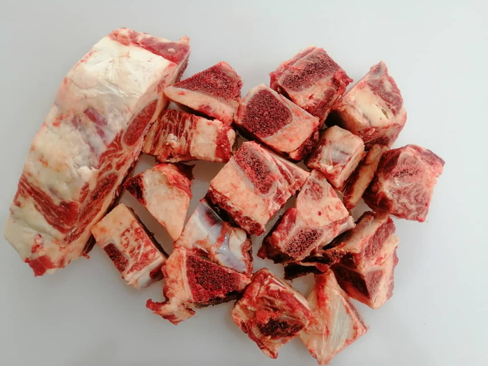
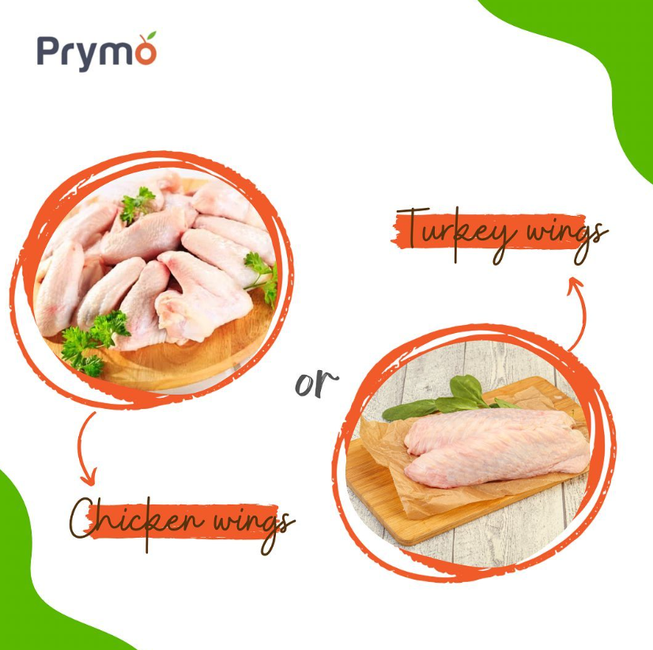

Prymo Lifestyle
Unlocking the Art of Meat
Tips On How To Eat and Prepare Your Proteins Properly

What Exactly Is a Prime Cut
Admin
Beef Products
15
Prime Cuts refer to the high-quality and most tender portions of meat. These cuts are typically well marbled and offer exceptional flavour and tenderness which are often taken
Read More
Why You Should Store Meat in Proper Storage Bags
Admin
Storage
36
Properly storing meat in airtight containers can help extend its shelf life by reducing exposure to air which can lead to oxidation and spoilage. This can help to aviod food waste and maximize
Read More

Chicken Wings Vs Turkey Wings
Admin
Poultry
45
Chicken wings are smaller and typically sold in groupss of two or three as a single serving. On the other hand, turkey wings are larger and can be served individually and have richer meatie flavor
Read More